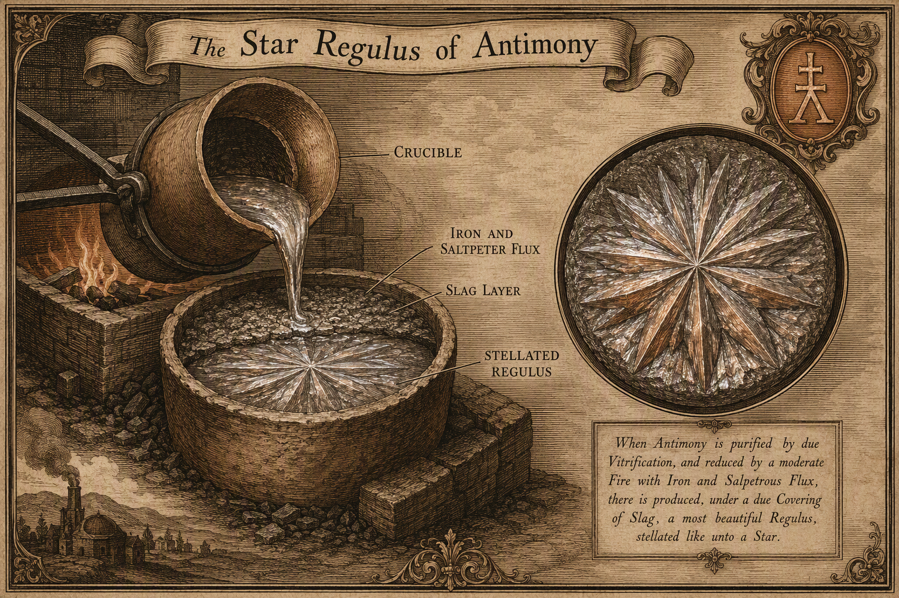
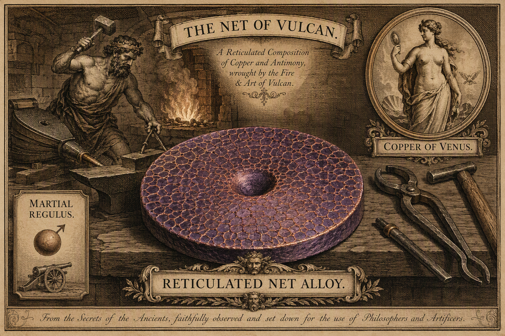
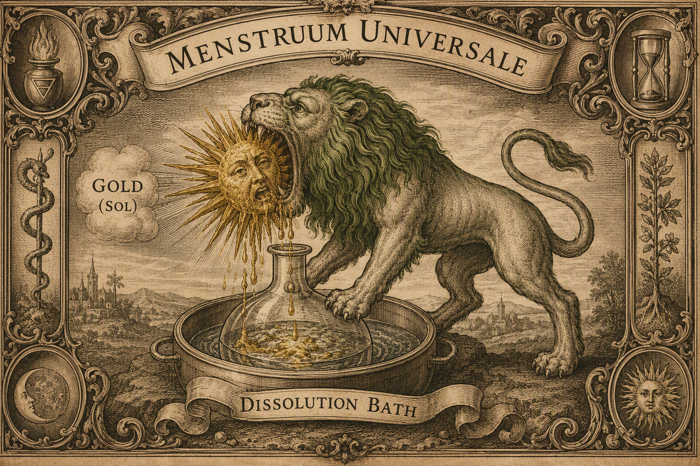
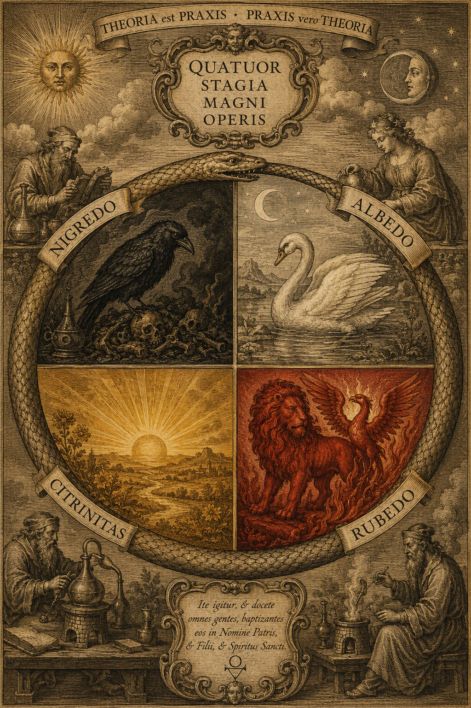

The Corpus
A million words, scattered and reassembled
Newton’s alchemical Nachlass — roughly one million surviving words — descended to the Portsmouth family, was declined by Cambridge University in 1888 as non-scientific, and went under the hammer at Sotheby’s in July 1936 for about £9,000. John Maynard Keynes bought most of the alchemy (now the Keynes MSS at King’s College, Cambridge); Abraham Yahuda bought the theology and some alchemy (now at the National Library of Israel); the laboratory notebooks stayed in the Portsmouth Collection at Cambridge University Library (Add. MSS 3973, 3975); Newton’s own treatise Praxis is Babson MS 420 at the Huntington.1
The reassembly is digital: the Chymistry of Isaac Newton project at Indiana University, directed by William R. Newman, is producing diplomatic and normalized transcriptions linked to manuscript images — work that drove a Unicode block of alchemical symbols into existence.2 Newton’s favorite author emerges clearly from the notebooks: George Starkey, writing as “Eirenaeus Philalethes,” whose Decknamen (cover-names) Newton decoded and tested at the bench.
The Index Chemicus method
The Index Chemicus (Keynes MS 30, drafted through the 1680s; final form 96 folios) is a concordance of cover-name headwords — “Green Lyon,” “Caduceus,” “Hollow Oak,” “Net of Vulcan” — with cross-author citations. The working method was: close reading, cross-author comparison, then bench testing. It is recognizably the method of the Principia applied to a corrupted textual tradition. And it could fail: on 10 May 1681 Newton wrote that he had understood the “two doves of Diana” — then crossed it out; on 18 May he believed he had cracked Mercury’s caduceus — crossed out too.1 The self-cancelled entries are the archive’s favorite kind of evidence: a mind correcting itself in ink.
The Deciphered Processes
The Star Regulus of Antimony Deciphered & replicated

The chemistry. Stibnite (Sb₂S₃) is fused with metallic iron (Mars) and saltpeter at high temperature; iron strips the sulfur, which enters the slag; cooled slowly and undisturbed beneath the slag cap, the metallic button — the regulus, “little king” — crystallizes with a radiating, many-rayed star. Newton made it repeatedly; Newman’s Indiana laboratory and Lawrence Principe replicated it, filmed for BBC/NOVA.3
The allegory. In the Philalethan reading the regulus is a “magnetic body,” a chalybs carrying the “martial seed”; the star is the sign that the operation toward the sophic mercury is on track. Newton’s own sophic-mercury copy explicitly requires “the Antimonial Stellate Regulus of Mars [iron] and Luna [silver].”
The status. This is the cleanest case in the archive of a cover-name resolving into a reproducible operation — and the empirical basis for experiment B7, which proposes to grade historical replication quality analytically (XRD, SEM-EDS, ICP-MS), turning alchemy into archaeometry.
The Sophick Mercury Never achieved

The document. Newton’s handwritten copy (1670–1678) of Starkey’s Praeparatio mercurii ad lapidem per regulum Martis antimoniatum stellatum et Lunam, ex MSS. Philosophi Americani — acquired by the Science History Institute in 2016.4
The chemistry. Repeatedly distill mercury and digest it with gold (plus silver and star regulus): the supersaturated amalgam precipitates metal as fractal dendrites — a branch-like metallic “tree,” the same physics as electrochemical dendrites and frost. Newton tracked Starkey’s gravimetric protocol: the sophic mercury should gain “fermental virtue,” not weight, through sublimation — an attempted null-result mass balance, remarkable for the 1670s.
The allegory. The sophic mercury is the universal solvent and mediator — “living” mercury against vulgar quicksilver, which carries “arsenical malignity” — reducing metals to prima materia, the engine of the Stone.
The status. No evidence Newton ever succeeded (Newman; Voelkel). The honest reconstruction is a documented failure — itself the scientific content: a falsified hypothesis preserved in a notebook. Newton’s hair carried elevated mercury; the mercury-poisoning reading of his 1693 “distemper” remains a hypothesis only.
The Net of Vulcan Deciphered & replicated

The chemistry. Copper fused with the martial star regulus yields a Cu–Sb(–Fe) alloy with a purple hue (a known Cu–Sb surface effect, the Cu₂Sb/Cu₃Sb intermetallic family), a central depression — the pipe cavity of directional solidification — and a reticulated surface where the last liquid outlined the primary dendrite network. Newton recorded it at Add. MS 3975 f.43r; f.54v equates it with Philalethes’ “oak”; it is a headword in the Index Chemicus. Newman deciphered and replicated it.3
The allegory. Ovid’s myth — Vulcan’s net trapping Venus and Mars — read as a recipe: Vulcan is fire, Mars is iron (via the martial regulus), Venus is copper, and the net is the alloy’s crystalline mesh. A myth decoded into a foundry recipe whose success criterion is a microstructure.
Diana’s Doves Deciphered (Newman)
The chemistry. Diana is silver (Luna); the doves are twin portions of silver in the silver-based stage of quickening mercury — an amalgam of antimony–silver regulus with mercury and sulfur.
The allegory. The doves that “conquer the Lion” (the Babylonian Dragon): the lunar agent taming the volatile antimonial-mercurial beast.
The status. Newton’s own 1681 claim to have understood the doves was self-cancelled in the notebook; the modern decipherment is Newman’s, from Starkey’s corpus.3
The Green Lion Cover-name, partially mapped

Newton’s own concordance entry (quoted by Westfall) shows the cover-name at full bloom:
The Lion is the raw solvent matter that “devours” (dissolves) metals — bound by Newton to magnesia, common mercury, and the Saturnine (lead/antimonial) stone. It gave Betty Jo Dobbs the title of her first book (The Hunting of the Greene Lyon, 1975). Unlike the regulus and the net, no single bench operation has been certified as its final referent.
The Caduceus Unsettled
An Index Chemicus headword; in Philalethan usage it encodes the sophic mercury bound with its two metallic “serpents” — the twofold sulfur or seed from the star regulus and Luna. Newton’s 18 May 1681 identification is crossed out. No final decipherment is documented — the archive records the gap rather than filling it.
Aether & Spirit
The Boyle letter (1679) and the Hypothesis of Light (1675)
Newton’s two great aether texts are firmly documented. In the Hypothesis of Light (December 1675) he proposed an elastic aether pervading all space, bearing “electric and magnetic effluvia” and a “gravitating principle”:
In the 1679 letter to Boyle the aether does mechanical work — explaining refraction, diffraction, cohesion, capillary rise, and the action of menstruums — and ends with a gravity conjecture: aether finer toward Earth’s center, grosser aether above pushing bodies down. A mechanical density-gradient gravity, not an occult attraction.5 The texts grew from the alchemical treatise Of Natures obvious laws & processes in vegetation (Dibner MS 1031B), in which metals “vegetate” and the Earth is “a great animall” that “draws in aethereall breath.”
The correspondence with the modern quantum vacuum — omnipresent, active, not nothing — is graded Speculative: a genuine structural analogy (a plenum whose local state mediates interactions) that differs in every measurable particular. Michelson–Morley and the entire twentieth century stand between the two. Full argument: Atlas, Essay B.
The Scholarly Dispute
Four readings, one corpus
- Dobbs (Foundations 1975; Janus Faces 1991): alchemy central; a vegetative, active spirit mediating God and matter; intertwined with anti-Trinitarian theology. Critiqued Newman’s objection: the lab notebooks mention God once in 452 pages — in material copied from Starkey.
- Westfall (Never at Rest 1980): “profound conversion in 1679–80 under the combined influence of alchemy and orbital mechanics… the ultimate agent of nature would be a force acting between particles.” The classic alchemy→action-at-a-distance thesis. Contested
- Newman (Newton the Alchemist 2019): the Decknamen decode to real, reproducible lab operations — which refutes purely psychic readings as the texts’ primary content; alchemy supplied “active principles” underlying chymical phenomena and the later Queries on gravity. Proved the Clavis was copied from an unpublished Starkey manuscript — Dobbs acknowledged.6
- Principe (The Secrets of Alchemy 2013): “chymistry” was one discipline; read the texts via laboratory replication — he reproduced Boyle and Starkey processes, the stella antimonii, and Diana’s Tree (2018). Newton a serious chymist alongside Boyle and Starkey.
The alchemy→optics link is documented, not conjectured: Newton recorded Boyle’s analysis/resynthesis experiments (amber, antimony, niter) in the same notebook as the prism experiments, and the 1669 optics lectures borrow Boyle’s “redintegration” for recombining white light.6
The four stages — the color cycle

The laboratory color cycle — blackening, whitening, (yellowing, later dropped), reddening — is documented across the tradition Newton read. Jung’s psychological mapping is the other projection: nigredo “felt as melancholia… the encounter with the shadow”; albedo the withdrawal of projections; rubedo the coniunctio, “the realization of a whole, that is, of a self.” The physics analog — dissolution, purification, recombination; entropy and order; phase transitions — is graded Speculative: metaphorically resonant, measurably empty. The honest synthesis is Principe’s: the alchemists were doing real, often skilled chemistry, wrapped in symbolic language that served as both trade cipher and genuine metaphysics, onto which later readers projected psychology and moderns retrospectively map nuclear physics. The philosopher’s stone was never made. What survives is the best-documented case study we have of how a metaphysical research program can contain real science, real psychology, and real failure simultaneously.
- Cambridge UL Add. MSS 3973, 3975 (lab notebooks, 452 pp.); Keynes MSS, King’s College Cambridge; Babson MS 420, Huntington Library. Corpus and custody: chymistry.org and newtonproject.ox.ac.uk. ↩
- The Chymistry of Isaac Newton project (Indiana University, dir. William R. Newman; NSF/NEH funded): chymistry.org. ↩
- Newman, Newton the Alchemist (Princeton, 2019); Principe, The Secrets of Alchemy (Chicago, 2013); BBC/NOVA replication film, Newton’s Dark Secrets (2005). ↩
- Starkey/Newton, Praeparatio mercurii ad lapidem…, Science History Institute (acquired 2016): sciencehistory.org. ↩
- Newton to Boyle, 28 Feb 1678/9, full text: newtonproject.ox.ac.uk, NATP00275; Hypothesis of Light (Dec. 1675). ↩
- W. R. Newman, “Newton’s Clavis as Starkey’s Key,” Isis 78 (1987): 564–74, doi.org/10.1086/354476. ↩